Acest raport prezinta proiect web prezentat implementează o aplicație
pentru gestionarea informațiilor despre o grădină zoologică.
Introducere
Grădinile zoologice sunt locuri de importanță majoră pentru conservarea
speciilor animale și pentru educația publicului cu privire la
diversitatea și importanța faunei sălbatice. Însă gestionarea
informațiilor despre animalele găzduite într-o grădină zoologică poate
fi complexă și necesită un sistem eficient și centralizat.
ZoM (Zoo Web Manager) propune implementarea unei aplicații web pentru
gestionarea informațiilor referitoare la o grădină zoologică. Aplicația
va facilita redarea și managementul datelor despre animalele gazduite,
oferind o gamă largă de informații relevante, cum ar fi denumirea
populară și științifică a animalelor, descrieri, originea, statutul de
conservare, caracteristici specifice (cum ar fi dependența de climă sau
proprietăți speciale), imagini de interes, regim alimentar (vegetarian,
carnivor, omnivor) și multe altele.
Aplicația va oferi mecanisme avansate de căutare, filtrare și prezentare
multi-criterială, permițând utilizatorilor să efectueze căutări complexe
și să obțină rezultate relevante. Utilizatorii vor avea posibilitatea să
filtreze animalele în funcție de criterii specifice, cum ar fi regimul
alimentar, regimul de activitate (nocturn sau diurn), originea
geografică și altele. De exemplu, utilizatorii pot selecta să afișeze
toate mamiferele omnivore nocturne din Africa sau să genereze o listă de
păsări și insecte capabile să supraviețuiască în condiții desertice.
Pe lângă funcționalitățile oferite prin interfața web, aplicația va
permite și importul/exportul datelor prin intermediul fișierelor în
formatele JSON și XML, asigurând astfel transferul facil al
informațiilor.
Un alt aspect important al acestui proiect este furnizarea de
funcționalități esențiale prin intermediul unui API REST.
În continuare, vom explora în detaliu caracteristicile și
funcționalitățile pe care această aplicație web le va oferi pentru
gestionarea informațiilor animalelor si angajatilor dintr-o grădină
zoologică.
1.1 Scopul aplicatiei
Scopul aplicației Zoo Web Manager (ZoM) este de a facilita și de a usura
munca angajaților unei grădini zoologice în gestionarea informațiilor
despre animalele gazduite. Aplicația are ca obiectiv principal
centralizarea și eficientizarea procesului de management al datelor,
oferind un sistem integrat și ușor de utilizat.
Prin intermediul ZoM, angajații vor putea introduce și actualiza
informațiile despre animale într-o manieră organizată și structurată.
De asemenea, aplicația ZoM va oferi funcționalități avansate de căutare,
filtrare și prezentare multi-criterială, permițând angajaților să
găsească rapid și eficient informațiile de care au nevoie. Angajații vor
putea obține liste personalizate de animale care îndeplinesc anumite
criterii specifice.
Prin ZoM, se urmărește să se reducă timpul și efortul necesar pentru
gestionarea informațiilor despre animale și să se ofere un sistem
intuitiv și eficient pentru angajați, permițându-le să se concentreze
mai mult asupra îngrijirii animalelor și a altor aspecte importante ale
grădinii zoologice.
1.2 Publicul Țintă
Publicul țintă al aplicației Zoo Web Manager (ZoM) este reprezentat de
angajații unei grădini zoologice responsabili de gestionarea
informațiilor despre animalele gazduite.
Aplicația Zoo Web Manager (ZoM) este un produs nou care are ca scop
facilitarea gestionării informațiilor despre animalele gazduite într-o
grădină zoologică. Aplicația este concepută pentru a fi utilizată
independent, fără a fi parte a unei familii de produse sau a înlocui
alte sisteme existente.
2.2 Funcții ale produsului
Principalele funcții pe care utilizatorul le poate poată efectua sunt:
Login/Logout/Register
Schimbarea parolei si a informațiilor personale
Gestionarea informațiilor despre animalele găzduite în grădina
zoologică
Gestionarea user-ilor din aplicatie
Redarea și managementul datelor despre animale, inclusiv denumire
populară și științifică, descrieri, origine, statut de conservare,
caracteristici specifice, imagini de interes, regim alimentar etc.
Căutare, filtrare și prezentare multi-criterială a animalelor
Import și export de date în formatele JSON și XML
Submit ticket pentru raportarea problemelor în departamente
Trimiterea de e-mailuri cu problemele întâmpinate în aplicație către
administrator
Schimbarea temei aplicației
Schimbarea limbii descrierilor animalelor
Mai multe detalii despre aceste funcții vor fi furnizate în secțiunea 3
a documentului.
2.3 Clase de utilizatori și caracteristici
Produsul este destinat utilizării de către următoarele clase de
utilizatori:
Utilizatori normali ai grădinii zoologice
Angajați ai grădinii zoologice cu acces de administrator pentru
gestionarea informațiilor despre animalele găzduite
Caracteristicile relevante pentru fiecare clasă de utilizatori sunt:
Utilizatori normali ai grădinii zoologice:
Posibilitatea de a viziona și filtra informațiile despre animale
Angajați ai grădinii zoologice cu acces de administrator:
Acces privilegiat la sistem
Poate vizualiza, filtra, adauga și șterge informațiile despre
animale
Poate "concedia" un user
2.4 Mediu de operare
Produsul functioneaza independent de sistemul de operare. Este o
aplicație web ce poate fi accesată și utilizată prin oricare dintre
browserele larg răspândite (Chrome, Opera, Firefox, Microsoft Edge).
2.5 Restricții de proiectare și implementare
Produsul este supus următoarelor restricții și opțiuni tehnologice:
Se utilizează limbajele de programare JavaScript, HTML și CSS pentru
partea de frontend.
Se utilizează Node.js pentru dezvoltarea backend-ului.
Se utilizează o bază de date PostgreSQL pentru stocarea datelor.
Se evită utilizarea framework-urilor atât în partea de frontend, cât
și în partea de backend.
2.6 Documentație utilizator
Acest document poate fi considerat o parte a documentației utilizator și
conține informații relevante despre produs. O alta componenta a
documentației utilizator care este furnizate împreună cu software-ul
este pagina de help
2.7 Asumpții și dependențe
Se iau în considerare următoarele asumpții și dependențe:
Funcționarea corectă a bazei de date PostgreSQL utilizate în cadrul
aplicației
Disponibilitatea unui mediu de dezvoltare și de operare adecvat pentru
software-ul dezvoltat, inclusiv servere și echipamente hardware
necesare
Cooperarea și furnizarea de informații adecvate din partea grădinii
zoologice
Proiectul poate fi afectat în cazul în care aceste asumpții se dovedesc
a fi incorecte, sunt partajate sau se modifică.
3. Interfețe externe
3.1 Interfață utilizator
Aceasta este prima pagina ce întâmpină utilizatorul la deschiderea
site-ului web. De aici putem alege dacă dorim să ne logăm sau să ne
creăm un cont nou.
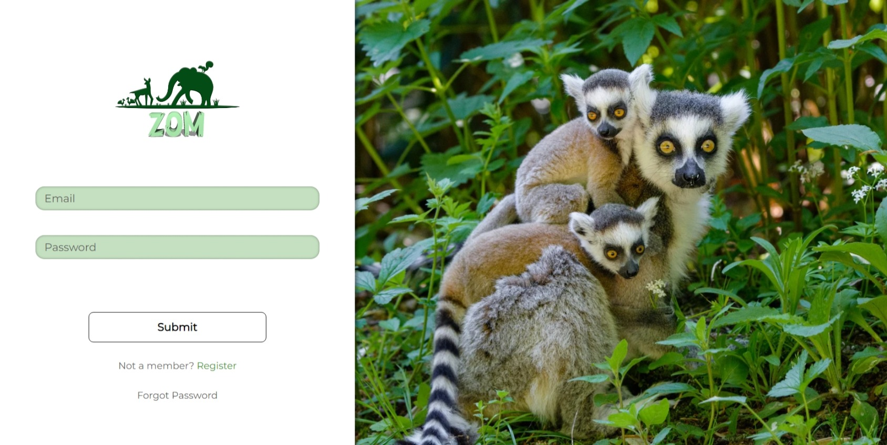
Aceasta este pagina în care utilizatorii pot introduce datele de
autentificare pentru a se conecta la conturile lor. De asemenea, pot
alege să-și creeze un cont nou dacă nu au sau să-și schimbe parola
în caz de au uitat-o.
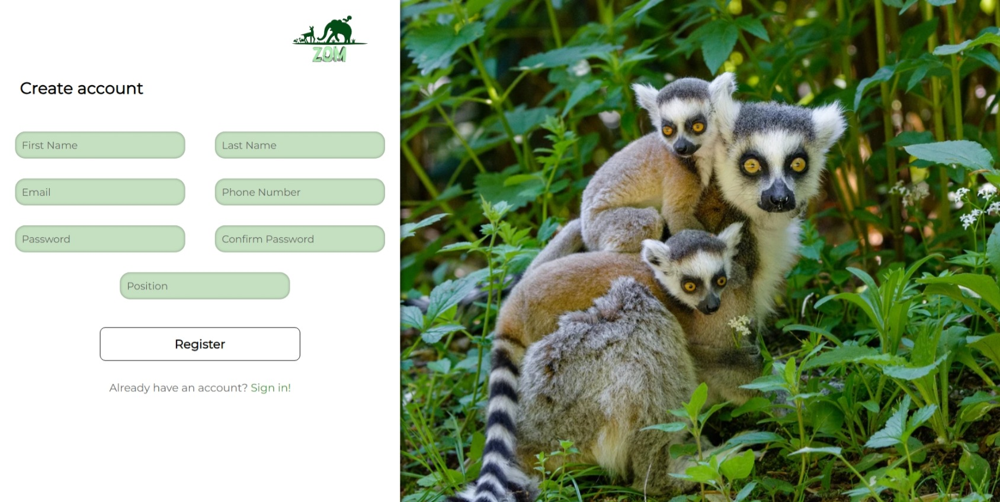
Această pagină permite utilizatorilor să își creeze un cont nou. Nu
se pot crea conturi cu același email sau număr de telefon.
Prima pagina din parcursul resetării parolei constă în introducerea
email-ului cu care te-ai logat pentru a primi un cod de siguranță.
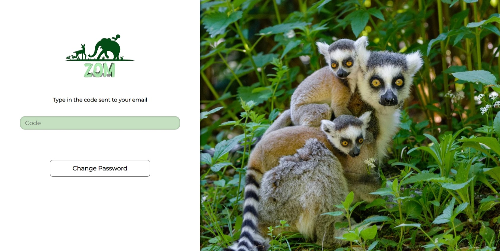
Al doilea pas din resetarea parolei presupune introducerea codului
primit pe email-ul introdus anterior.
Ultimul pas din resetarea parolei reprezintă introducerea noii
parole și confirmarea ei. Parola va fi schimbată cu succes și vă
veți putea loga acum.
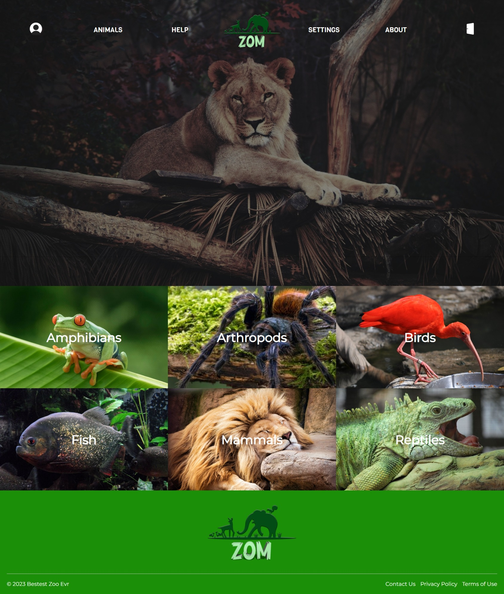
Aceasta este pagina principală care ne întâmpină după logarea în
aplicație. De aici poți naviga în aplicație sau accesa diferitele
categorii de animale existente în grădina zoologică.
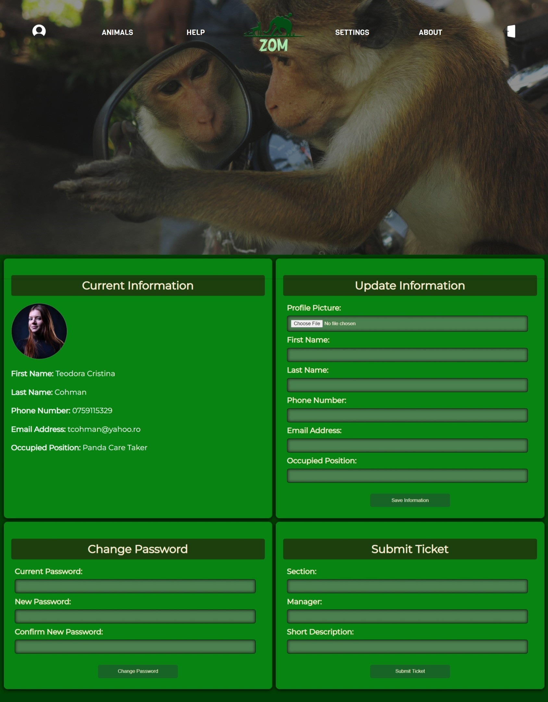
Această pagină afișează informațiile personale folosite la
înregistrare. Panoul din dreapta sus oferă posibilitatea modificării
informațiilor personale și alegerea unei poze de profil. Panoul din
stânga jos permite utilizatorului să-și modifice parola, fiind
necesară și introducerea parolei curente. Panoul din dreapta jos
presupune trimiterea de tickete cu scopul de a raporta problemele
fizice din secțiunile grădinii zoologice.
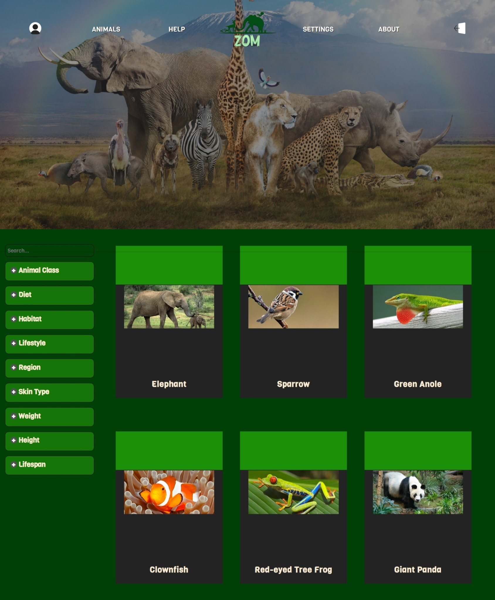
Această pagină prezintă colecția existentă de animale și oferă
posibilitatea căutării după nume a unui animal sau filtrarea
acestora real-time în funcție de criterii multiple.
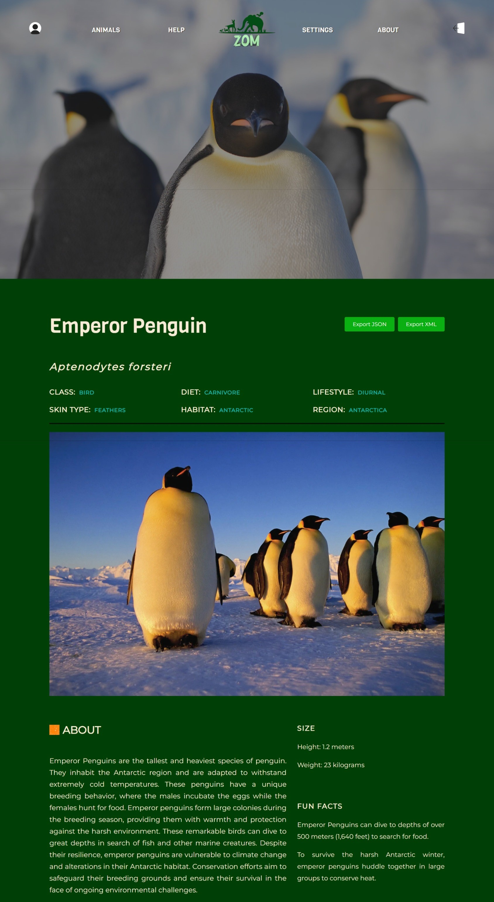
Această pagină oferă detalii și informații despre un animal
specific, ales din colecția de animale.
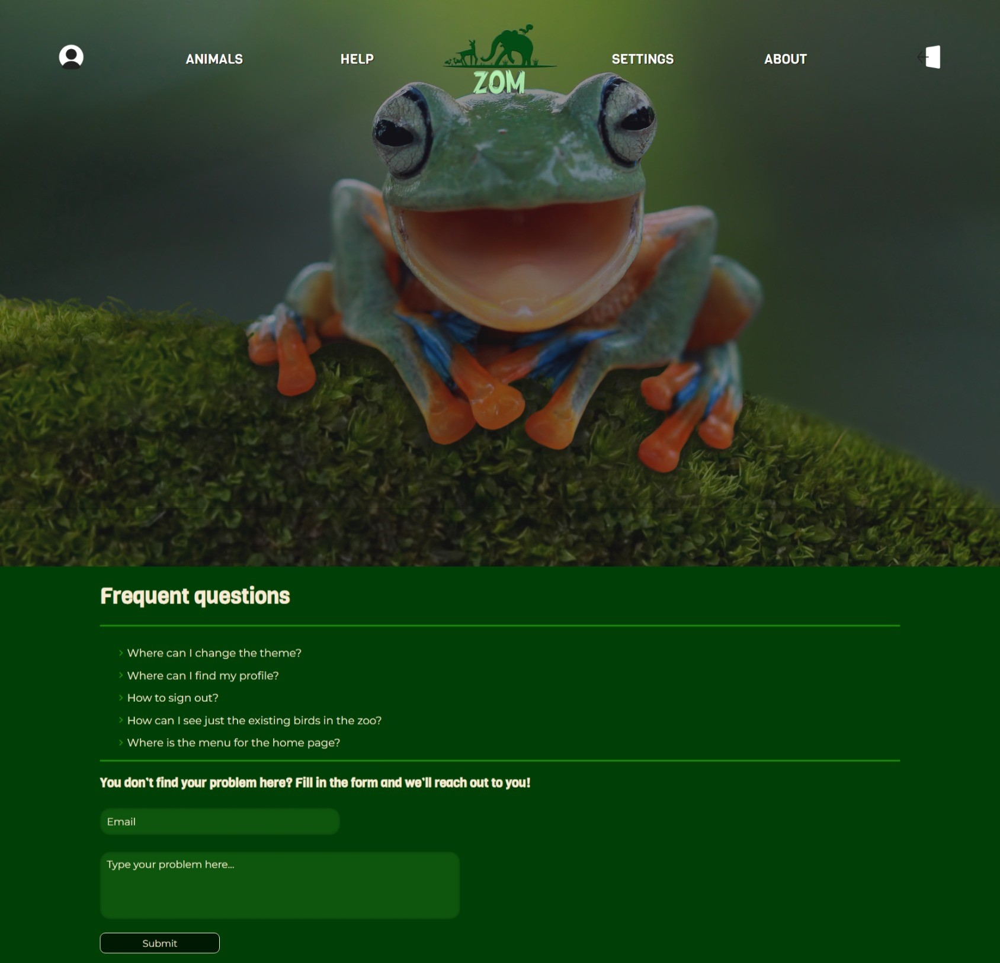
Această pagină oferă asistență sau ghidare utilizatorilor, cum ar fi
Întrebări frecvente (FAQ) și existența unui formular pentru a
trimite neclarități despre folosirea aplicației către un email al
adminilor aplicației.
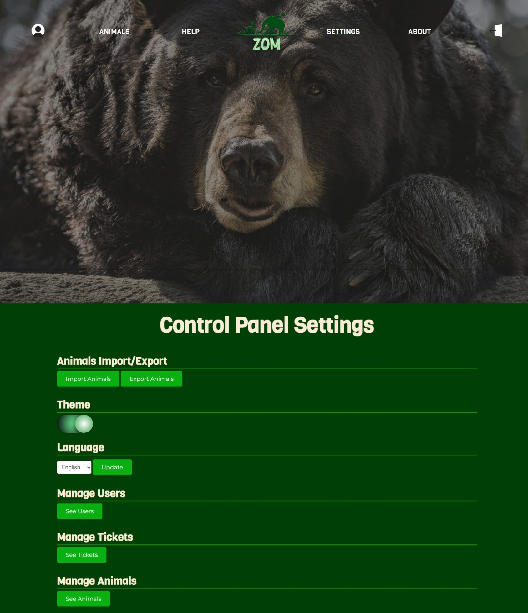
Această pagină reprezintă panoul de control al aplicației și oferă
posibilitățile de a importa (numai pentru userii admini) și exporta
animale din colecție, de a schimba tema vizuală (light/dark), de a
schimba limba descrierilor animalelor (english/french) și 3 meniuri
dedicate userilor cu rol de admin ce presupune gestionarea
angajaților, tichetelor de secțiuni și a animalelor.
Acesta este tabelul cu useri valabil doar din rolul de admin în care
se pot vedea persoanele ce au cont pe această aplicație și
posibilitatea de a șterge o persoană („a concedia”) din baza de
date.
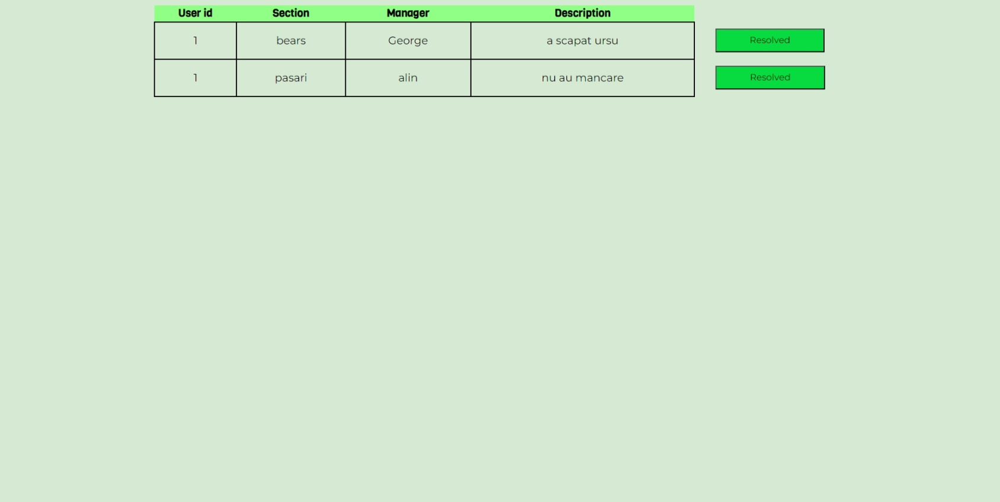
Acesta este tabelul cu tichetele trimise de toți userii ce punctează
anumite probleme regăsite sau observate în grădina zoologică. Putem,
de asemenea, după ce un tichet a fost vizionat și revizuit să fie
notat ca „rezolvat” pentru a-l șterge.
Acesta este ultimul tabel ce poate fi vizionat numai de admini si
permite adminilor să vadă toate animalele din aplicație, să seteze
pentru fiecare fotografii noi și să șteargă animale din baza de
date.
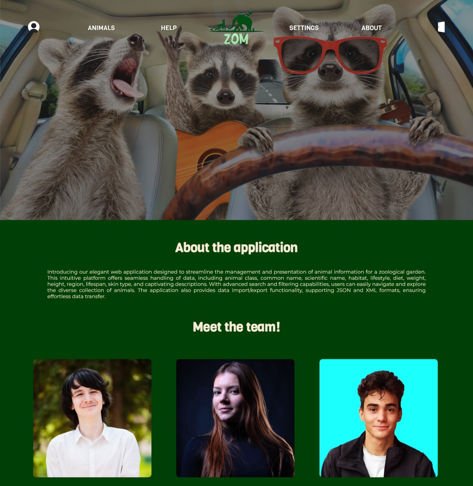
Aceasta este pagina în care se prezintă o mică descriere a
aplicației și echipa ce a lucrat la aceasta.
3.2 Interfață software
Aplicația noastră utilizează o bază de date PostgreSQL pentru a gestiona
și stoca datele referitoare la animale și utilizatori. Baza de date este
utilizată pentru a păstra evidența detaliată a acestor date și pentru a
facilita funcționalități precum autentificarea și stocarea informațiilor
relevante.
Pentru partea de server, aplicația este dezvoltată folosind Node.js,
fără utilizarea de framework-uri suplimentare. Alegerea Node.js ne oferă
flexibilitate și control sporit în dezvoltarea logicii de server.
Pentru funcționalități adiționale, aplicația noastră utilizează trei
pachete externe:
Nodemailer: Este utilizat pentru a permite aplicației să trimită
e-mailuri pentru functionalitati precum resetarea parolei.
Jsonwebtoken: Este utilizat pentru generarea și verificarea
tokenurilor JSON Web Tokens (JWT), care sunt folosite pentru
autentificare și autorizare în cadrul aplicației noastre.
pg: Este utilizat pentru interacțiunea cu baza de date PostgreSQL,
oferind funcționalități și metode necesare pentru conectarea,
interogarea și manipularea datelor din baza de date.
3.3.1 Controlere API
Aplicația noastră expune un API RESTful dezvoltat utilizând Node.js,
care permite interacțiunea cu diverse resurse și funcționalități. Pentru
gestionarea resurselor legate de animale și utilizatori, aplicația
noastră utilizează mai mulți controleri, care furnizează endpoint-uri
pentru a efectua operații specifice asupra resurselor corespunzătoare.
AnimalController: Furnizează endpoint-uri pentru gestionarea
operațiilor legate de animale.
GET:
/api/animals: Returnează o listă cu toate animalele stocate.
/api/animals/{id}: Returnează informațiile animalului cu ID-ul
specificat.
/api/animalNames: Returnează numele tuturor animalelor.
/api/animals/categories: Returnează categoriile dupa care pot fi
filtrate animalele.
/api/animalJSON/{id}: Returnează animalul cu ID-ul specificat în
format JSON.
/api/animalXML/{id}: Returnează animalul cu ID-ul specificat în
format XML.
/api/getAllImage1: Returnează toate imaginile 1 asociate
animalelor.
/api/getAnimalImage1/{id}: Returnează imaginea 1 asociată
animalului cu ID-ul specificat.
/api/getAnimalImage2/{id}: Returnează imaginea 2 asociată
animalului cu ID-ul specificat.
/api/getAniFrench/{id}: Returnează textul în limba franceză
asociat animalului cu ID-ul specificat.
POST:
/api/animals/filter: Returnează animalele filtrate în funcție de
anumite criterii.
PUT:
/api/insertAni: Inserează un animal nou.
/api/setAnimalImage1/{id}: Actualizeaza imaginea 1 pentru animalul
cu ID-ul specificat.
/api/setAnimalImage2/{id}: Actualizeaza imaginea 2 pentru animalul
cu ID-ul specificat.
DELETE:
/api/animals/{id}: Șterge animalul cu ID-ul specificat din sistem.
/api/setAnimalImage1/{id}: Actualizeaza imaginea 1 pentru animalul
cu ID-ul specificat.
/api/setAnimalImage2/{id}: Actualizeaza imaginea 2 pentru animalul
cu ID-ul specificat.
HelpController: Furnizează endpoint-uri pentru furnizarea de
informații și asistență utilizatorilor.
POST:
/api/help: Primește email-ul și problema introdusă și le trimite
pe email-ul administratorului.
ProfileController: Furnizează endpoint-uri pentru gestionarea
profilurilor utilizatorilor.
/api/saveInfo: Trimiterea noilor informații despre user.
/api/updateProfilePicture: Adăugarea unei poze de profil.
/api/submitTicket: Trimiterea datelor unui ticket spre baza de
date.
ForgotPasswordController: Furnizează endpoint-uri pentru gestionarea
resetării parolei.
POST:
/api/code: Preia email-ul introdus de utilizator și îi trimite
mail cu un cod unic.
/api/insertCode: Preia codul introdus de user și îl compară cu cel
generat la pasul anterior.
/api/changePass: Trimite și modifică noua parolă introdusă.
SettingController: Furnizează endpoint-uri pentru gestionarea
setărilor aplicației.
POST:
/api/theme: Seteaza tema unui utilizator.
TicketsController: Furnizează endpoint-uri pentru gestionarea
operațiilor legate de tichete.
GET:
/api/tickets: Returnează toate informațiile despre tickete.
DELETE:
/api/tickets/{id}: Această rută șterge ticket-ul specificat prin
ID-ul său.
UsersController: Furnizează endpoint-uri pentru gestionarea
operațiilor legate de utilizatori.
GET:
/api/users: Returnează toți utilizatorii din aplicație.
/api/logUser: Returnează informații despre utilizatorul
autentificat.
/api/logUserTheme: Returnează tema preferată a utilizatorului
autentificat.
/api/getLanguage: Returnează setarea de limbă a utilizatorului
autentificat.
PUT:
/api/setLanguage: Modifică setarea de limbă aleasă de utilizator.
DELETE:
api/users/{id}: Această rută șterge utilizatorul specificat prin
ID-ul său.
LoginController: Furnizează endpoint-uri pentru gestionarea
autentificării utilizatorilor.
POST:
/api/login: utentifică un utilizator prin verificarea datelor de
autentificare.
RegisterController: Furnizează endpoint-uri pentru gestionarea
înregistrării utilizatorilor.
POST:
/api/register: Înregistrează un utilizator prin înregistrarea
datelor de autentificare.
API-ul nostru este securizat cu JSON Web Tokens (JWT) pentru a asigura
autentificarea și autorizarea în cadrul aplicației noastre. Fiecare
cerere către API trebuie să includă un token JWT valid în antetul
autorizare pentru a permite accesul la resursele protejate. Această
măsură de securitate ajută la prevenirea accesului neautorizat și
asigură că doar utilizatorii autentificați și autorizați pot
interacționa cu API-ul și resursele asociate.
3.3.2 Multi Page Application (MPA)
O aplicație multi-page (MPA - Multi Page Application) este un model
tradițional de dezvoltare web în care fiecare pagină a site-ului este
trimisă de server ca un nou document HTML. Acest lucru duce la
reîncărcarea completă a paginii de fiecare dată când este vizitată o
nouă pagină.
Fiecare pagină poate fi accesată direct prin propriul URL. Într-o MPA,
serverul determină ce HTML să trimită înapoi la browser în funcție de
cerere. Aceasta se opune modelului de Single Page Application (SPA),
unde majoritatea resurselor (HTML/CSS/JS) sunt încărcate o singură dată,
iar schimbarea conținutului este gestionată prin JavaScript pe partea de
client.
3.3 Interfață comunicare
În acest proiect, comunicarea este efectuată prin intermediul
protocolului HTTP (Hypertext Transfer Protocol), care este un standard
pentru transmiterea de informații pe web. Prin utilizarea HTTP,
aplicația noastră poate să facă request-uri la server și poate să
primească răspunsuri.
Comunicarea dintre client și server se realizează printr-o serie de
request-uri HTTP, fiecare având asociat un răspuns în format JSON.
4. Caracteristici sistem
4.1. Login/Logout/Register
Pentru a utiliza funcționalitățile aplicației, utilizatorii trebuie sa
se autentifica în contul lor. Autentificarea se realizează prin
introducerea adresei de email împreună cu parola corespunzătoare. După
ce utilizatorul a furnizat informațiile de autentificare valide, acesta
obține acces la toate funcționalitățile disponibile.
În cazul în care utilizatorul nu are deja un cont, are opțiunea de a se
înregistra. Prin înregistrare, utilizatorul poate crea un cont nou
introducând adresa de email, un nume, un prenume, un numar de telefon și
o parolă. După finalizarea procesului de înregistrare, utilizatorul va
putea sa se autentifice in aplicatie.
În momentul în care utilizatorul dorește să încheie sesiunea și să
părăsească aplicația, poate opta pentru dezautentificare. Prin
dezautentificare, utilizatorul este delogat din contul său și nu mai are
acces la funcționalitățile aplicației până când se autentifică din nou.
4.2. Forgot Password
În cazul în care utilizatorul uită parola și nu mai poate accesa contul,
este disponibilă opțiunea de recuperare a parolei. Utilizatorul trebuie
să introducă adresa de email asociată contului și va primi un email cu
un cod special pentru a putea introduce o nouă parolă.
4.3. Filtrare animale
Pe pagina "Animals", utilizatorii au posibilitatea de a căuta și filtra
animalele în funcție de diferite criterii. Această funcționalitate
permite utilizatorilor să refineze rezultatele și să găsească rapid
animalele dorite. Criteriile de filtrare pot include clasa animalelor,
dieta, habitatul, lifestyle (nocturn sau diurn), regiunea, skin type,
greautarea, inaltime si durata de viata. originea, statutul,
caracteristicile sau speciile înrudite.
4.4. Vizionare animale
Utilizatorii au posibilitatea de a viziona paginile individuale ale
animalelor din grădina zoologică. Pe pagina dedicată unui animal
specific, utilizatorii pot accesa informații detaliate despre acesta,
inclusiv denumirea populară, descriere, origine, statut, și
caracteristici. De asemenea, în funcție de setările și preferințele lor,
utilizatorii pot beneficia de o descriere multilingvă a animalelor, care
să fie adaptată limbii selectate în profilul lor.
4.5. Import/Export JSON și XML
Utilizatorii au posibilitatea de a importa și exporta date despre
animale în format JSON și XML. Prin import, utilizatorii pot încărca un
fișier JSON sau XML care conține detalii despre un animal și să adauge
acele informații în aplicație. Aceasta oferă o modalitate rapidă și
convenabilă de a adăuga animale noi în baza de date. Prin export,
utilizatorii pot descărca un fișier JSON sau XML care conține datele
unui animal selectat din aplicație, permițându-le să stocheze
informațiile cu ușurință.
4.6. Ștergere animale și utilizatori
Utilizatorii cu privilegii de administrare au posibilitatea de a șterge
atât animalele din baza de date, cât și conturile utilizatorilor din
aplicație. Această funcționalitate le permite să gestioneze conținutul
și utilizatorii aplicației într-un mod eficient. Prin ștergerea
animalelor, administratorii pot elimina animalele care nu mai sunt
relevante sau care nu mai fac parte din grădina zoologică. De asemenea,
prin ștergerea utilizatorilor, administratorii pot gestiona baza de
utilizatori și pot elimina conturile care nu mai sunt necesare sau care
încalcă regulile și politica de utilizare a aplicației.
4.7. Tickets
Utilizatorii au posibilitatea de a trimite tickete pentru a raporta
probleme sau a solicita asistență. Prin intermediul unei pagini profile,
utilizatorii pot completa un formular în care să specifice departamentul
relevant, managerul departamentului și descrierea problemei întâmpinate.
Aceste tickete vor fi înregistrate în aplicatie pentru a fi preluate și
gestionate de către departamentul corespunzător.
Administratorii aplicației au acces la o secțiune specială pentru
vizualizarea și gestionarea ticketelor. Ei pot vizualiza toate ticketele
înregistrate. Pe măsură ce probleme sunt rezolvate, administratorii au
opțiunea de a le șterge din sistem, confirmând astfel finalizarea și
soluționarea problemei raportate.
5. Cerinte non-functionale
5.1 Cerinte de securitate
Utilizarea bcrypt pentru stocarea parolelor utilizatorilor, asigurând
o securitate sporită.
Implementarea autentificării și autorizării bazate pe JSON Web Tokens
(JWT).